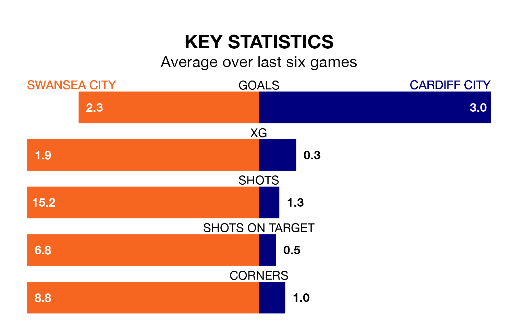

Swansea City host Cardiff City in Sunday's early match looking to bounce back from defeat last time out in the Welsh Premier Women's League.
The Swans, who sit second in the league after 17 games, fell to a 4-0 away defeat to Cardiff City on Wednesday.
They face a Cardiff side who picked up a win in their last match, a 4-0 victory against Swansea City, and who sit first in the table.
With 56 goals in 18 games so far this season, Cardiff are the league's highest scorers with 3.1 goals per game. And they are conceding fewer than average, letting in nine goals at a rate of 0.5 per game.
Swansea are also above average scorers, with 2.4 goals per game, compared to a league average of 1.8. They have conceded 1.2 goals per game.
In the last 10 years, Swansea and Cardiff have played each other on 13 occasions. Swansea won six of them, Cardiff five, and they drew twice.
On average, the Swans scored 2.0 goals and Cardiff 1.3 in those matches.
Their last meeting was on Wednesday, when Cardiff won 4-0 at home.
Swansea City are in good form in the Welsh Premier Women's League, with four wins and a draw from their last six games.
With five wins and one loss over that period, Cardiff City's form is slightly better – they have taken 15 points from 18, compared to the Swans' 13.
Updated: 10:31 (UTC), 31/03/24